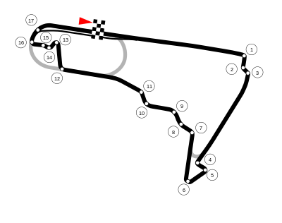

NAVEGUE
Home
Pilotos
Calendário/Tabela
Grand Prix
Construtoras
Últimas Notícias
GP do México
SOBRE
A pista do México, também conhecida como Autódromo Hermanos Rodríguez, é um circuito de corrida localizado na Cidade do México. Inaugurada em 1962, a pista tem 4,3 km de extensão, com 17 curvas, e é conhecida por sediar a etapa mexicana da Fórmula 1. A pista passou por uma grande reforma em 2015, que incluiu a construção de novas arquibancadas e a ampliação da capacidade do autódromo para 135 mil espectadores.
Circuitos Utilizados
Hermanos Rodríguez
INFORMAÇÕES DA CORRIDA

Localização
Cidade do México
Voltas
71
Percurso
4.304 km
Total
305.354 km
Curvas
17
Pole
Daniel Ricciardo
Anos Disputados
23
Última Disputa
2022
Maior vencedor
Max Verstappen
Última Corrida - Pódio
Max Verstappen